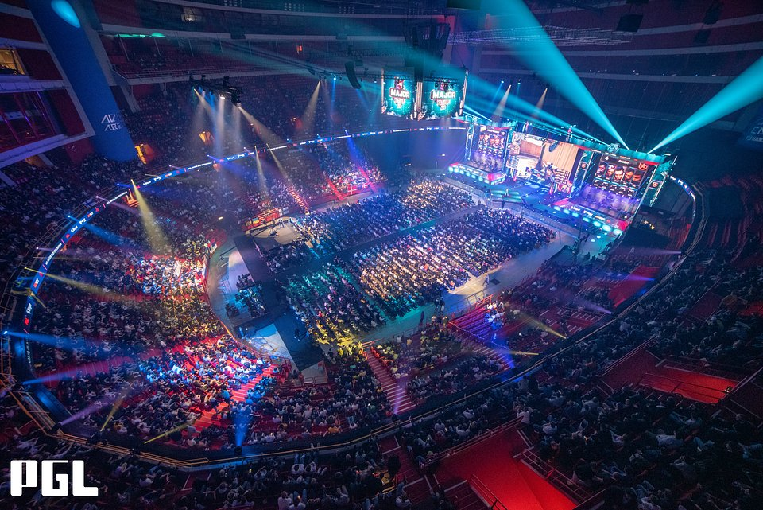

Video Games

Image of various video game boxes
Video Games have existed for over 60 years now and its clear to see why they have gained popularity among people. Their fun, addicting nature and charming storys have encaptived millions and gonered cult followings of dedicated fans itching to get their hands on new releases. But has this pass time activity actually impacted society that much or is it truely, just a hobby?
A Brief History
Image of Pong created by William Higinbotham
The first ever video game to have been created was Pong in 1958 which, for its time was, was a masterpiece and even now-a-days people still play this game on browser. Pong was created for use on an arcade mashine as consoles were yet to be created. Other famous arcade game titles were Pacman, Space Invaders, Galaga and Donkey Kong. But the first real game that hit the world stage would only come just over 30 years later, with the creation of Super Mario Bros for the Nintendo Entertainment System console, or NES for short. This game is a classic and is very wellknown due to the Mario Brothers series being one of the most popular video game series to this day. Nintendo was one of the first companies to concore the world stage of video game development and thus became one of the leading video game and console producers. Another one of these giants is Sega, though they are no longer as well known for their games. They created many games with large followings such as Sonic, Mortal Combat and Street Fighter. One thing that all of these games have in common is the fact that they are offline games, as the internet was only up and comming during those times. With the creation of the internet however, games rapidly evolved and a new type of game was created as a result: Online multiplayer games. Online multiplayer games are staples of modern video games and these types of games became even more well known due to their coverage of high level players competing against eachother to become the best. Enter ESports!
ESports
Image of the 2021 Counter Strike Global Offence major tournament in Stockholm
If any online multiplayer versus game attracts any amount of popularity then you can almost guarantee that there is some sort of competitive scene for it. Playing a game competitively for varius prize pools is called competing in ESports or Electronic Sports events. Such events started of as neish gatherings of people attempting to be the best at their game with only a couple people watching but have evolved into game viewings of over milions. This was the case for the 2021 Counter Strike Global Offence (CS GO) PGL Major in Stockholm, which broke viewership numbers for the game at over 2.7 Million viewers. This years major is set to break even those high view counts, demonstrating the increased interest for the sport of playing video games.
Video games are a booming industry and have truly impacted society, as shown through their development throughout history.
Back to top of page